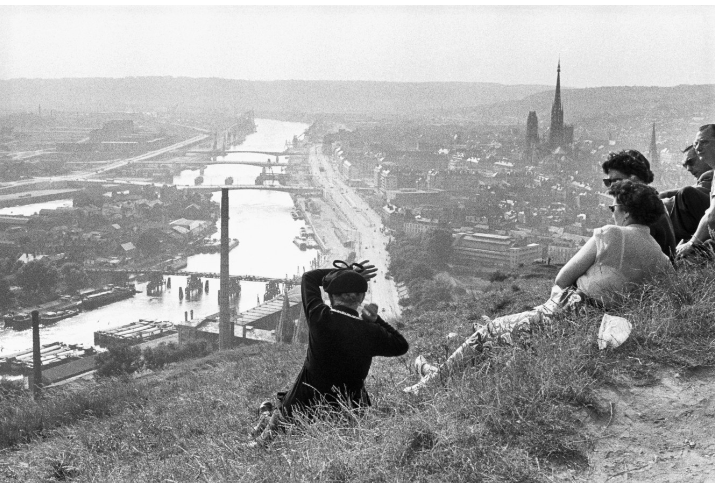
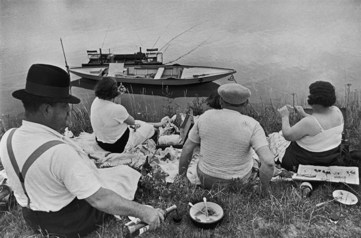
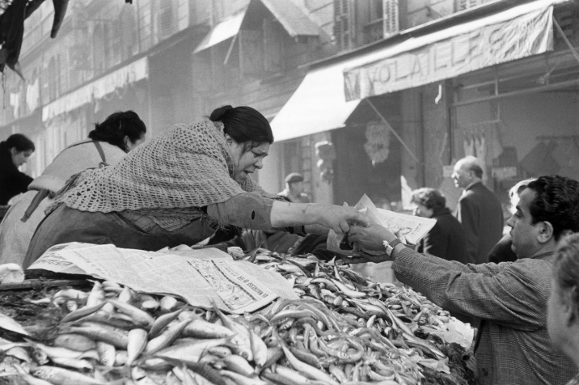

France
France belongs to the West, of course. But Cartier-Bresson’s exploration of his own country yielded a harvest of photographs so abundant and vital that it deserves special attention.

1955 Rouen, France

1968 Brie, France

1938 Juvisy, France
